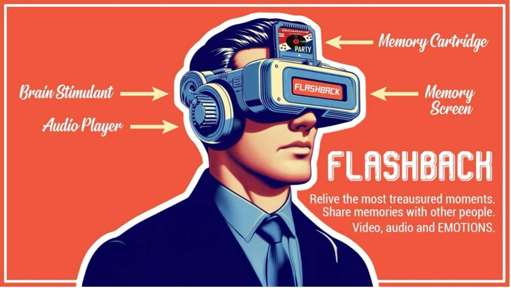
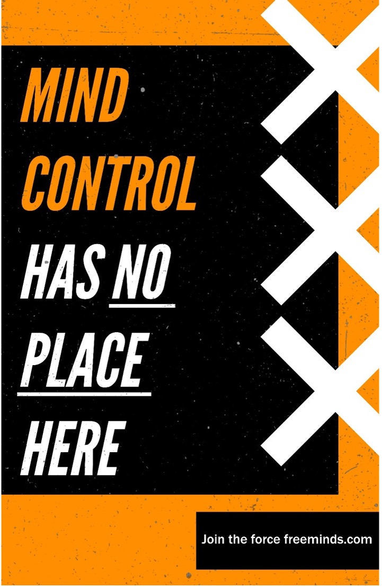

Introduction
During our introduction week to semester three. We were split into different groups. Each group was
tasked to make a product that might be developed in 2050. We could pick one of these eight subjects.
As a group we were in doubt about choosing Love, Healthcare and Entertainment. We first chose
healthcare because we thought this would be very important in the future.
First Research
On day one everyone started with a few insights on research. I was a big fan of nanotechnology and 3d
printing because I think that these two subjects will be huge in the future.
Main insights from research
Nanotechnology and Advanced Drug Delivery
-
Targeted Drug Delivery: Nanotechnology will enable drugs to be delivered precisely where
they
are needed, minimizing side effects and maximizing effectiveness, particularly in cancer
treatment.
-
Nanobots in the Bloodstream: Nanobots could be deployed to identify and repair cellular
damage, clear clots, or even fight infections directly inside the body
-
Illness: What if we can use nanotechnology to prevent illnesses from developing, for
example
with nanobots we can see if the water you drink is clean or dirty. Dirt water causes a lot of
diseases so we can easily combat those. Combining this with our Wearables idea we can make a
good anti-disease mechanism
3D Printing and Bioprinting
-
Custom Implants and Prosthetics: 3D printing will allow for the creation of highly
customized implants and prosthetics, perfectly suited to an individual's anatomy.
-
Organ Bioprinting: Lab-grown organs using a patient's own cells will reduce the need for
organ
donors, potentially eliminating transplant waiting lists and the risk of organ rejection.
What-If Statements
After everyone did some research we made some what-if statements.
- What if we make a bracelet for people to wear that will analyse the human body and sent data to
the doctors.
- What if we make an exo skeleton for disabled people so that they can move and do daily
activities.
- What if people with lung problems could exercise like other people?
- What if we add nanotechnology to the human body, so that this tech can detect causes for
diseases
before they develop.
- What if 3d printers exist that can develop organs and bodyparts for humans/animals
- What if we make a chip that can restore memory loss for people with Alzheimer's/Dementia.
Concept Board
-
Idea 1:
Exoskeleton for people that are disabled/unable to move. Using the brain and an implant we can
read
what the user wants to achieve and with the use of the exoskeleton this can be possible.
-
Idea 2:
Use nanotechnology to detect diseases before they develop. For example, test the water that is
in the body. Dirty water has a high risk of developing diseases and infections. The
nanotechnology will also notify the user and doctors when something is wrong with the user’s
body
-
Idea 3:
A headset that can relive memories, these memories will be stored on SD cards that can be traded
with other people to experience memories they never got to experience.
Flashback LO1
So, we finally concluded to make a headset like device that people can put memories in using SD
cards, these memories could be anyone's memory, which means we can share memories with other people.
So you might think how does this device work? Well there is a neuro device in the brain at all times
to document feelings.
Concept 1 LO1
Concept 2 LO1
I came up with the idea to add sd-cards that you can put in the device. Using the headset itself you
can store memories on the sd-card.
Figure 1 - Devan Janssen
Matheusz also made a concept. This concept is more refined, you can find it below.

Figure 2 - Matheusz
Posters LO1
Matheusz also made some posters, Vassil made some anti-posters. You can find these below.
Figure 3.1 - Matheusz
Figure 3.2 - Matheusz

Figure 4.1 - Vassil
Figure 4.2 - Vassil
Ethics
We started to work on the logic behind our concept because of course there are a lot of privacy
issues etc. So, we came up with the neurolink. This device is planted in the brain and can always
record everything. The headset itself just extract everything from the neurolink. The user itself
can decide which parts he/she wants to extract. Each memory can only be extracted to one SD card. So
that there are no chances of duplication memories and selling them. You can however still share your
memories with friends/family but only one at the time. This device can also be used during school to
give instructions or teach.